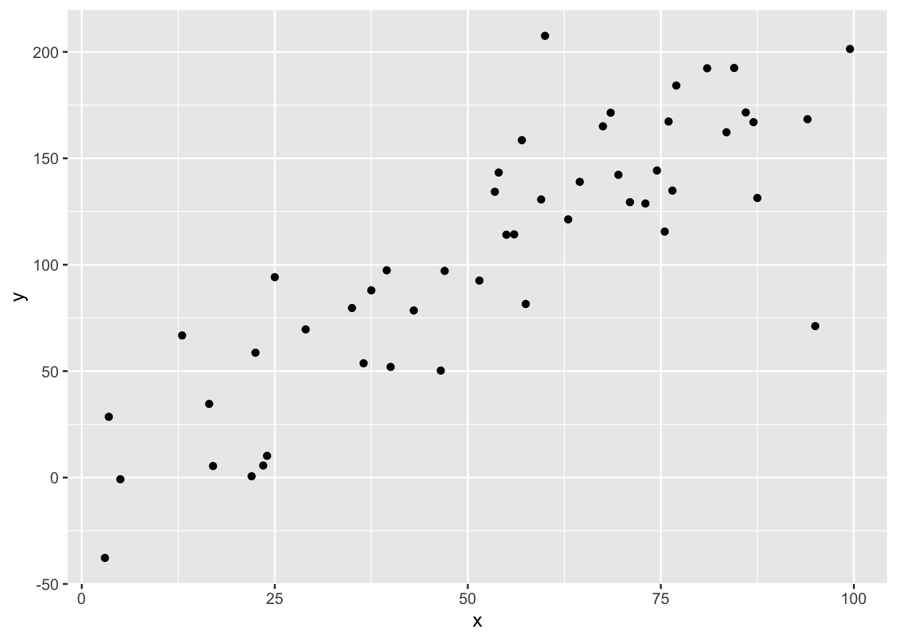
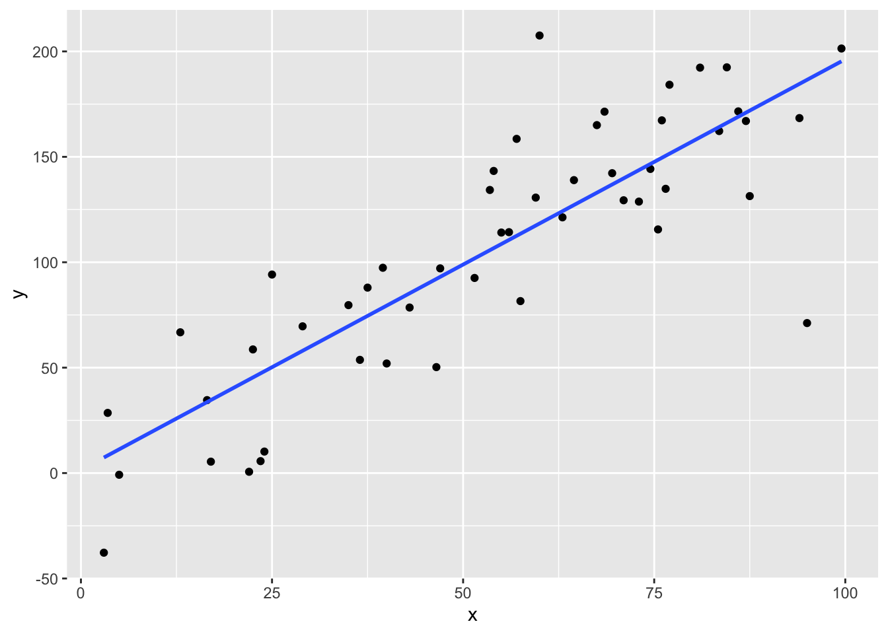

Chapter 2 Introduction
2.1 Linear models - a kind of Generalized Linear Model
If you have fit a linear model before, congratulations! You have already fit (one case) of a generalized linear model (GLM). Over the course of this book, we will explore the framework of Generalized Linear Models, why the Linear Model is a special case of a GLM, and two common type of GLMs, including logistic regression (for binary/binomial count data) and poisson regression (for count data).
Let’s review why we would fit a linear model. For linear regression, given our data, (if we make some key assumptions 2.2 ), we can perform inference or prediction by assuming that our response value forms a linear relationship with our explanatory variable (or variables). Generalized linear models expand upon the linear model assumptions to increase the kinds and ways we can use data to answer questions.
The reasoning behind linear models can be intuitive; if we have two continuous variables, and make a scatterplot our data, and see this:

we might want to fit a straight line through the cloud of points, i.e. modeling the relationship linearly.


To interpret this relationship and make predictions, we need to know the slope and intercept of this line. This is done by minimizing the least squares, which will be explored in Chapter 3 @ref{linear}. (will it? should it?) Linear models can also have multiple explanatory variables (\(X_1, \ldots X_n\) instead of just one \(X\)), and this becomes multiple linear regression. The visualization of this kind of data is more difficult, and for example purposes, we will only use one \(X\).
2.2 Assumptions of Linear Models
A linear model might very well be a good model if we have data like the above. However, there are many cases where it might be inappropriate to use a linear model. To understand these cases, we first review the assumptions of linear models.
Linear models assume:
- The relationship between the explanatory variables and the response is linear.
- The samples are independent.
- The errors are normally distributed with mean 0 and constant variance.
You might have seen these assumptions written in notation as such.
\[y_i = \beta_0 + \beta_1 x + \epsilon_i \] where \[ \epsilon_i \sim \text{iid } N(0,\sigma^2)\]
In words, this means that the errors are independent and identically distributed by the normal distribution, with mean 0 and constant variance \(\sigma^2\) (notice how there is no subscript \(i\) for the variance). If are performing multiple linear regression, the first assumption becomes \(y_i = \beta_0 + \beta_1 x_1 + \ldots + \beta_p x_p + \epsilon_i\).
To see how the linear model is a type of Generalized Linear Model, we will slightly modify how we think of these assumptions, so we will be able to more easily see the parallels. Instead of the response \(y_i\), now consider the mean response \(\mu_i\), which for a given value of one predictor \(x\) is the mean, or expected value of all responses with the value of that explanatory variable.
Then our assumptions become:
\[\begin{equation} \mu_i = \beta_0 + \beta_1 x \tag{2.1} \end{equation}\]
\[\begin{equation} y_i \sim \text{ iid } N(\mu_i, \sigma^2)\tag{2.2} \end{equation}\]
We refer to the first condition (2.1) as the Systematic Component and the second condition (2.2) as the Random Component
Generalized Linear Models are inspired by generalizing the random and systematic component of linear models.
A Generalized Regression Model has a systematic component:
\[ g(\mu_i) = \beta_0 + \beta_1 x + \epsilon_i\] To generalized the systematic component, we use a link function \(g(y)\), so we now require some function of the response to be linearly related to our explanatory variables.
and a random component:
\[y_i \sim \text{ iid } EDM(g(\mu_i), \phi) \] In words,… to some probability distribution in the Exponential Dispersion Family (EDM), which will be discussed in the next chapter. Normal, Binomial, and Poisson distributions all belong to the Exponential Dispersion Family. The EDM distribution depends on the mean response, as well as a dispersion parameter \(\phi\). For many commonly use GLMs, and the ones discussed in this book, this \(\phi\) is known.
We note that normal linear models fall easily into this framework, where \(g(y_i) = y_i\) the identity function, and use the Normal distribution as our random component.
Deciding on what Random and Systematic component to use requires ….
2.3 What happens when we break the assumptions of linear models
How can we tell when these assumptions are violated? We can examine both the random and systematic component and see if our data can/should be modeled in such a way. This largely comes from knowledge of the data.
Linear models are generally robust, and can be reasonable when assumptions are not exactly met. However, if we know assumptions are not met, and how they are not met, it is appropriate to use a more appropriate model for the data.
2.4 Parameter estimation
Another difference between linear models and generalized linear models is the way we estimate the parameters \(\beta\). For linear models, we find the minimize the sums of squares from the predictor to the response(s). This has a closed form solution, and can be calculated by hand (if one really wanted to). For generalized linear models, we estimate the \(\beta\) parameters using Maximum Likelihood Estimation. For the Normal linear model case, this is equivalent to minimizing the sums of squares. However, for other GLMs, there is no closed form solution, which requires us to perform an iterative algorithm to land at the parameter estimates. Luckily this is all done behind the scenes in R. Those interested in learning more about how parameter estimation works for GLMs can read Chapter 6 of (Dunn and Smyth 2018).
2.5 LMs and GLMs in R
Fitting GLMs in R is very similar to fitting linear models in R. For linear models, we use the function lm(). For generalized regression models, we use the function glm(). Both require a formula input, but glm() also requires the user to specify the random and systematic part of a GLM, by specifying the family and link function. Help for fitting a GLM can be found by ?glm() and reading more about the family argument.
Let’s use some simulated data to see how GLMs are fit in R, and
## y x1 x2
## 1 -411.7135 139.25 232.6
## 2 -777.7500 -88.00 203.9
## 3 -933.7452 -75.25 269.6
## 4 -688.6226 -26.50 217.5
## 5 -473.5069 201.50 288.0
## 6 -688.4904 -58.00 202.8First, fit a linear model the normal way, using lm()
##
## Call:
## lm(formula = y ~ x1 + x2, data = sim_data)
##
## Residuals:
## Min 1Q Median 3Q Max
## -62.859 -14.235 1.878 14.103 62.505
##
## Coefficients:
## Estimate Std. Error t value Pr(>|t|)
## (Intercept) 45.58554 21.97880 2.074 0.0416 *
## x1 2.01353 0.02967 67.875 <2e-16 ***
## x2 -3.19035 0.08658 -36.847 <2e-16 ***
## ---
## Signif. codes: 0 '***' 0.001 '**' 0.01 '*' 0.05 '.' 0.1 ' ' 1
##
## Residual standard error: 24.11 on 72 degrees of freedom
## Multiple R-squared: 0.9873, Adjusted R-squared: 0.987
## F-statistic: 2807 on 2 and 72 DF, p-value: < 2.2e-16Now we show that we can use glm() the same way, specifying family = "gaussian", which gives the identity link.
##
## Call:
## lm(formula = y ~ x1 + x2, data = sim_data)
##
## Residuals:
## Min 1Q Median 3Q Max
## -62.859 -14.235 1.878 14.103 62.505
##
## Coefficients:
## Estimate Std. Error t value Pr(>|t|)
## (Intercept) 45.58554 21.97880 2.074 0.0416 *
## x1 2.01353 0.02967 67.875 <2e-16 ***
## x2 -3.19035 0.08658 -36.847 <2e-16 ***
## ---
## Signif. codes: 0 '***' 0.001 '**' 0.01 '*' 0.05 '.' 0.1 ' ' 1
##
## Residual standard error: 24.11 on 72 degrees of freedom
## Multiple R-squared: 0.9873, Adjusted R-squared: 0.987
## F-statistic: 2807 on 2 and 72 DF, p-value: < 2.2e-16So we get exactly the same output, as we should, since both functions fit the same model. Many functions used for linear models, like coef(), predict(), etc, will perform as expected, when we pass a generalized linear model fitted using glm() in as the first argument.
2.6 Some definitions
We close this chapter with some definitions of common terminology and explanation of notation that will be used.
Predictor - the thing on the y-axis Explanatory variable - the stuff on the x-axis. Note that we can have more than one (but won’t plot it then), and then this becomes multivariate regression.
Something that is an estimated quantity will have a hat over it. For example, we might assume that there is some ‘true’ (but unknown) linear relationship between our explanatory variables and our predictor.
\[ y = \beta_0 + \beta_1 x\]
From our sample data, we use a linear model to make an estimate of \(\beta_0\) and \(\beta_1\),
so our estimate/best guess of this true model relationship is
\[ \hat y = \hat\beta_0 + \hat\beta_1 x\] We of course want our \(\hat\beta_0\) and \(\hat\beta_1\) to be a ‘good’ and ‘close’ estimate of the unknown quantities \(\beta_0\) and \(\beta_1\). Ideas of what ‘good’ and ‘close’ mean will be covered in the next section.
2.7 Conclusion
Linear models are not always the best tool for describing relationship in data. Luckily we can generalize the ideas and framework developed in linear models to hold for more general cases to create GLMs. Using a more general framework and more general assumptions allows us to build tools that will hold for all GRMs. The most notable of these that we will further explore are GRMs for binary data (ch4) and count data (ch5)
2.8 Examples
Perhaps some examples of data and students can tell what type of data it should be modeled by?
Explore the following case of where a linear model is NOT appropriate, and then fit a glm() call in R using an appropriate family and link function.
Note that this example might take a minute to load.
References
Dunn, Peter K, and Gordon K Smyth. 2018. Generalized Linear Models with Examples in R. Springer.